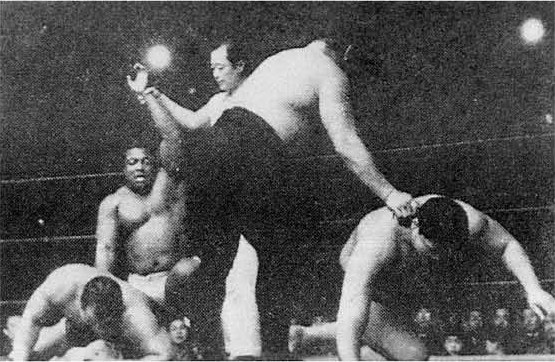
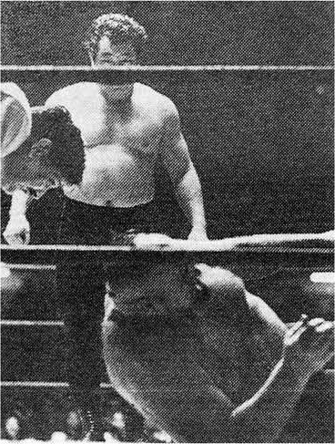
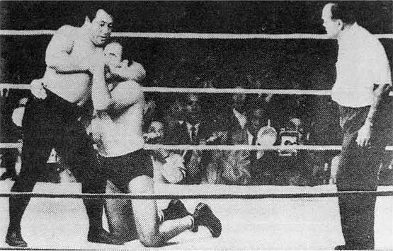
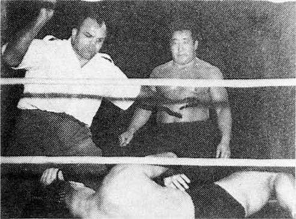
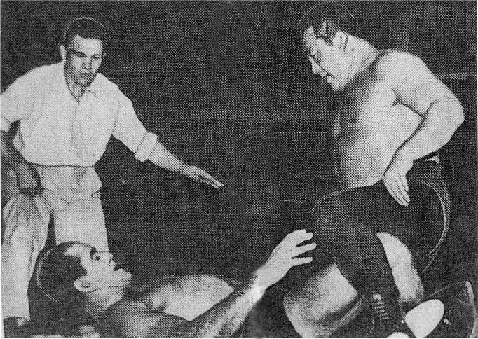

Глава 3
Оцифровано для VSplanet.net
1. Азумахудзи
Перед незавидным деревянным зданием «Ректосановских курсов» встал «Центр японской профессиональной борьбы». Занимало 700 пхен это пятиэтажное здание, построенное за счет средств Нийты Синсаку.
По возвращении Рек То Сана и Азумахудзи состоялась, как было предусмотрено, церемония открытия «Центра японской профессиональной борьбы». Нийта Синсаку пригласил на церемонию политических и общественных деятелей и представителей прессы.
В честь открытия этого Центра устроители профессиональной борьбы дали большой банкет, а после банкета проходили примерные соревнования между Рек То Саном и Азумахудзи.
На церемонии произнес речь Рек То Сан. Ее поместили газеты и журналы.
— . . . Во время последних заграничных соревнований я пригласил борцов-профессионалов. Пожалуй, в середине июля мы будем вести состязания с ними в Японии . . .
— Какие борцы-профессионалы приедут?—задал вопрос один из журналистов.
— Думаю, что не будут огорчаться любители профессиональной борьбы.
Рек То Сан не бросал слова на ветер. Как он сказал, во вторую декаду июля прибыли борцы-профессионалы: Пуримо Карнера—«шагающие Альпы», Зес Ордега—«слон Мексики», Бат Кхачис, Гадэй Гурсканф. . . Все они были борцами-профессионалами первого класса, широко известными в кругах мировой профессиональной борьбы. Поднялись возгласы не только среди японских борцов-профессионалов, но и среди любителей этого вида спорта.
С японской стороны будут выступать Рек То Сан, Азумахудзи, Тоёнобори, Эндо и Сругауми. Азумахудзи решил превысить на сей раз Рек То Сана и стать, как желает этого Нийта, спортсменом, играющим главную роль в Японском обществе профессиональной борьбы. Если будет так, то Рек То Сан сам выйдет из этого Общества. Тогда родится новое общество профессиональной борьбы, председателем которого станет Нийта Синсаку и опору которого будут составлять Азумахудзи, Эндо и Сругауми. Чтобы реализовать тайный сговор с Нийтой, Азумахудзи 7 июля поспешно подстриг волосы коротко и стал борцом-профессионалом.
Международные соревнования начались 15 июля встречей пары Рек То Сан—Азумахудзи с парой Карнера—Гурсканф. Азумахудзи упал от удара железного кулака Карнеры и был положен на обе лопатки. Карнера два раза капитулировал перед мощной атакой Рек То Сана. В результате пара Рек То Сан—Азумахудзи выиграла со счетом 2:1.
На стадионе «Коракуэн» в Токио состоялись состязания между парой Рек То Сан—Азумахудзи и парой Ордега—Кхачис. Это были не простые игры, а соревнования между командой-чемпионом Гавайев (пара Рек То Сан—Азумахудзи) и командой-чемпионом Центральной Америки (пара Ордега—Кхачис). Побежденная команда лишится звания чемпиона, а победившая завоюет два звания чемпиона.
Собрались 25 тысяч зрителей смотреть эти кровопролитные игры.
С самого начала Азумахудзи проявлял агрессивность. Хотя в играх с парой Карнера—Гурсканф выиграла пара Рек То Сан—Азумахудзи со счетом 2:1, но сам Азумахудзи проиграл в этих соревнованиях. Его пара победила благодаря тому, что Рек То Сан выиграл 2 раза. Упал на землю авторитет Азумахудзи. Поэтому соревнования с парой Ордега—Кхачис имели для него важное значение, чтобы восстановить авторитет и заодно превысить Рек То Сана. Он, разумеется, не упустил этот шанс. Публика болела за Азумахудзи. Возгласы 25 тысяч зрителей сотрясали стадион. Он, подняв руку, ответил на их привет. Азумахудзи повезло. Когда он вышел на ринг, поднялся туда не Ордега, а Кхачис. От радости он издавал странный крик, раздававшийся по всему стадиону. Он поступил бы иначе, если бы появился Ордега. Он боялся «слона Мексики», но к Кхачису относился по-иному. У последнего телосложение и физическая сила были слабее, чем у Азумахудзи.
Увидя партнера, опытный борец Кхачис предпринимал атаку, непрерывно передвигаясь по площадке, словно боксер. Азумахудзи пытался схватить и давить противника, но тот ловко скользил из его рук. Когда минуло 19 минут, Азумахудзи вихрем обрушился на Кхачиса в попытках зажать его. Но на сей раз Кхачис не увильнул, а, пользуясь пружинистыми канатами ринга, бросился вперед стрелой и ударил головой в грудь Азумахудзи. Он упал от неожиданного удара. Не давая передышки, Кхачис начал давить противника. Азумахудзи протянул руку к Рек То Сану и просил помощи, но не смог касаться его руки из-за большого расстояния. Азумахудзи старался изо всех сил вырваться из дожима, но не успел. Через 12 секунд он был положен на обе лопатки. Окрыленный победой Кхачис жестом руки вызвал Рек То Сана на схватку. Рек То Сан вскочил на ринг и тут же наносил ему непрерывный режущий удар каратэ. Кхачис не смог выстоять и пятился в сторону, где стоял Ордега, чтобы тот заменил его. Но Рек То Сан преградил ему путь, не давая смениться, и продолжал удар. Через 7 минут 52 секунды Кхачис упал на поле. Счет стал 1:1. Накалялась атмосфера.
Началась кровавая борьба между Рек То Саном и Ордегой. Развернулось противоборство режущего удара каратэ первого с железным кулаком последнего. Это был кровопролитный бой в буквальном смысле слова. Ордега отразил мощным кулаком удар «золотой правой руки» Рек То Сана. Рек То Сан понял, что невозможно пересилить Ордегу режущим ударом каратэ, и изменил тактику. Нанеся несколько ударов подряд, он схватил руками за обе ноги партнера, чтобы выбросить его за ринг. В этот момент Ордега обвил руками шею Рек То Сана, и оба вылетели через ринг. Так ожесточенная схватка продолжалась вне ринга. Оба спортсмена дрались, обливаясь кровью. Рек То Сан схватил голову Ордеги и бил ее о железный столб ринга. У Ордеги сломался череп и текла кровь. Он, издавая вопль, похожий на фырканье слона, бешено кидался на Рек То Сана.
Судья на ковре прервал соревнования потому, что у Ордеги сильное кровотечение, но тот не повиновался его распоряжениям. Кхачис—напарник Ордеги пытался сдержать его, а последний нанес удар первому. Кхачис влетел вдаль и упал. Судья вместе с Отхоном усмирил наконец Ордегу. Азумахудзи сдержал Рек То Сана сзади. Так состязания кончились вничью со счетом 1:1. Любители профессиональной борьбы впервые смотрели такую ожесточенную схватку вне ринга.
Азумахудзи бросил вызов Ордеге. Иные специалисты говорили, что если Азумахудзи победит Ордегу, то будет доказано, что он сильнее Рек То Сана, так что эта встреча значит противоборство с Рек То Саном. Когда Азумахудзи появился на ринге, зрители встали с места и приветствовали его. Он поднял руку и с полной самоуверенностью ответил на их привет.
Ордега, в свою очередь, с усмешкой и недоумением глядел на Азумахудзи, прислонившись к канатам ринга.
«Пословица «щенок не боится тигра», наверное, имеет в виду этого Азумахудзи»,—думал он.
Началось состязание.
Ордега наносил партнеру непрерывный удар. Азумахудзи предполагал это, но не рассчитывал, что противник является спортсменом первого класса, известным в кругах мировой профессиональной борьбы. Ордега был чудовищем, которое борцы-профессионалы мира называли «слоном Мексики» или «бешеным слоном». Его рост достиг 196 см, вес—140 кг. Поистине сокрушительным был его удар рукой и ногой, который не давал партнеру передышки. У Азумахудзи лилась кровь по лбу и щекам от его жестокого удара. Увидя кровь, «слон Мексики» обрушился на Азумахудзи, словно хочет убить его. Азумахудзи был весь в крови и не успел даже защищаться. Судья на ковре прервал состязание, но Ордега не подчинился и оттолкнул его за ринг. Азумахудзи не мог даже двигаться, не говоря уже о защите. Наносил удар только один Ордега. Когда прошло 9 минут 17 секунд, вскочил на ринг Рек То Сан, который смотрел соревнования. Он ударил рукой Ордегу и спас Азумахудзи. Если бы не было его вмешательства, тот погиб бы от кулака Ордеги. Но Азумахудзи не сказал Рек То Сану ни слова благодарности, а, наоборот, клеветал на него. Он утверждал, что, мол, был намерен давить Ордегу, измотав его, но потерпел поражение из-за «нежелательной помощи» Рек То Сана. . .
Азумахудзи снова бросил Ордеге вызов. Но тот не откликнулся, заявив, что он недостоин быть его партнером. Ордега предложил Рек То Сану единоборство. Он охотно принял это предложение. Прежде чем встретиться с Ордегой, Рек То Сан провел поединок с Карнерой. Три года назад в Сан-Франциско состоялось единоборство между Рек То Саном и Карнерой. Тогда была ничья со счетом 1:1. Рек То Сан решил изменить этот счет на сей раз. Соревнования были противоборством «золотой правой руки» Рек То Сана с «убийственным кулаком» Карнеры. Борцы-профессионалы мира очень боялись «убийственного кулака» Карнеры. Этот беспощадный спортсмен убил однажды своим «железным кулаком» боксера Шака. В 61-минутном соревновании на три гейма Рек То Сан пересилил Карнеру со счетом 3:0. Карнера с восхищением сказал, что режущий удар каратэ стал намного сильнее, чем три года тому назад. Тогда Рек То Сан наносил этот удар в основном сверху вниз, но теперь он делает главный упор на параллельный удар, сочетая его с ударами сверху вниз, наклонно и снизу вверх. Самым мощным был параллельный удар.
Состязание между Рек То Саном и Ордегой проходило в середине сентября в доме спорта в Токио. Ордега заявил, что если его победит Рек То Сан, он подарит ему национальную одежду Мексики с длинными рукавами и национальный головной убор с высоким корпусом, и добавил, что так не будет.
Было ожесточенным 61-минутное состязание на три гейма. Оно кончилось победой Рек То Сана со счетом 2:1. Побежденный Ордега подарил Рек То Сану национальную одежду и головной убор, как он обещал.
Все больше расширялась популярность Рек То Сана, тогда как Азумахудзи лишился популярности. Однако этот честолюбец не отказался от гнусной цели превысить Рек То Сана.
С 8 по 22 ноября 1955 года в Токио состоялся чемпионат Азии по профессиональной борьбе. Было предусмотрено, что Рек То Сан будет выступать в паре с Азумахудзи. Но вдруг последний взял обратно свое согласие. Рек То Сан решил составить пару с Эндо. Тогда Азумахудзи упрашивал его разрешить выступать в паре с Эндо. Рек То Сану хотелось дать ему пощечину, но он сдержался и уступил. Нийта Синсаку попросил Рек То Сана удовлетворить его просьбу, да и иностранные спортсмены желали, чтобы Азумахудзи выступал в паре с Эндо.
Азумахудзи всячески мешал Рек То Сану добиться успехов в предстоящем чемпионате. Этот японец не сомневался, что если он выступит в паре с Рек То Саном, они завоюют звание чемпиона. Но тогда популярностью будет пользоваться один Рек То Сан, а он, Азумахудзи, дескать, останется тусклым под его тенью. Было также ясно, что если Рек То Сан образует пару с Эндо, то первенство будет за ними. Нельзя допускать этого, чтобы мешать Рек То Сану стать чемпионом. Тогда ему придется выступать в паре с Гарольдом Сакадой, но у них не получается слаженное взаимодействие, так что им не удастся выйти даже на полуфинал. С другой стороны, он, Азумахудзи, в паре с Эндо сможет выйти на финал, а в лучшем случае—завоевать звание чемпиона. В таком случае можно будет дискредитировать Рек То Сана и создать благоприятные условия для основания нового общества профессиональной борьбы во главе с ним. Он верил, что его пара добьется больших успехов, чем пара Рек То Сана, хотя не сможет выйти на финал. Следовательно, игра стоит свеч. Таков был расчет Азумахудзи.
На чемпионате Азии по профессиональной борьбе парного разряда были образованы пары борцов согласно ухищрениям Азумахудзи.

Специалисты и любители профессиональной борьбы предсказали, что пара Азумахудзи выйдет на финал, а пара Рек То Сана потерпит поражение на первой встрече, не успев выйти даже на полуфинал.
Но не оправдался их прогноз. На финал вышла пара Рек То Сан—Гарольд Сакада. Но она потерпела поражение на финальном матче.
Эндо сказал Азумахудзи:
— Я потерпел фиаско, доверив вам. Вы не борец-профессионал, а мошенник.
2. Превентивные меры
Рек То Сан открыл блокнот и считал что-то, то и дело качая головой.
— Господин Рек То Сан, вы пригласили меня?—бесшумно вошел в комнату и спросил Касаяма—правая рука Нийты.
— Здравствуйте, господин Касаяма. Мне нужен ваш совет, — ответил Рек То Сан.
Касаяма с телосложением настоящего борца сел против хозяина и проговорил:
— Скажите, пожалуйста. А какой совет вам нужен от меня?
— Мне нужен именно ваш совет, вернее ваша помощь.
— Моя помощь, говорите?
— Да.
Рек То Сан предложил гостю гаванскую сигару и продолжал:
— В эти дни я задумываюсь над Японским акционерным предприятием по устроению профессиональной борьбы. Думаю, что вам, господин Касаяма, не надо подробно объяснять причину. . . Ведь знаете вы это предприятие, как свои пять пальцев. Откровенно говоря, достается слишком мало вознаграждения этому Рек То Сану, непосредственно борющемуся, проливая кровь. А господин Нийта гребет деньги лопатой с одним лишь языком. То же самое и у директора Хаяси предприятия «Ёсимото» и его брата. Больше я не могу мириться с этим. Просто не спится мне от этой мысли. И я решил приобрести все акции Японского акционерного предприятия по устроению профессиональной борьбы, которые оно имело во время своего основания в 1953 году.
Касаяма предполагал, что когда-нибудь Рек То Сан скажет об этом, но не ожидал, что он ставит этот вопрос так рано.
— Но общая цена всех акций составляет 4,5 миллиона иен. Из них только 500 тысяч иен принадлежит вам, а остальные—господину Нийте Синсаку и еще пяти предпринимателям. Весьма трудно будет приобрести эти акции. В отрыве от их усилий немыслимо сегодняшнее развитие профессиональной борьбы в Японии.
— Господин Касаяма, вы возражаете на мое мнение?
— Не возражаю, но . . .
— Господин Касаяма, больше я не могу допускать, чтобы падали в чужой карман деньги—плоды моей кровопролитной борьбы . . . Как вы будете поступать, если окажетесь в моем положении?
— Буду изучать дело.
— Надо решить проблему как можно скорее. Недостаточно ли взять несколько человек для эксплуатации предприятия?
— Людей-то можно нанять сколько угодно. Дело в приобретении акций.
— Плачу щедро. Покупайте все акции немедленно.
— Это невозможно. И для регистрации потребуется около 10 дней. Будем обсуждать с директором Нийтой. Он же ведает нашим предприятием.
— Я уже сказал и директору Нийте. Не надо мешкать. . .
— Завтра я буду советоваться с адвокатом и вести подготовительную работу.
— Не завтра, а сейчас же давайте обсуждать с адвокатом. Прошу вас, господин Касаяма. Это моя первая и последняя просьба к вам. Не беспокойтесь о средствах. Продвигайте дело, не внимая сумме денег.
Вообще Рек То Сан не верил японцам. Но он был благодарен Нийте Синсаку и верил ему.
Однако Рек То Сан перестал верить Нийте Синсаку после того, как в прошлом году он получил письмо от Тоёнобори на Гавайях во время, когда он вместе с Азумахудзи вел международные соревнования в США. Он не показал виду, но стал серьезно думать о прошлых событиях. Ему казалось, что не случайно Азумахудзи бросил вызов Ордеге и он образовал пару не с ним, а с Эндо на чемпионате Азии по профессиональной борьбе парного разряда. Рек То Сан понял интригу Азумахудзи против него. Азумахудзи был намерен низложить Рек То Сана, что отразило позицию Японского акционерного предприятия по устроению профессиональной борьбы.
Рек То Сан полагал, что он может быть выброшен с «корабля», именуемого Японским акционерным предприятием по устроению профессиональной борьбы. Он решил стать владельцем и капитаном этого «корабля», прежде чем быть выброшенным с его борта. Для этого не следовало жалеть денег.
На следующий день позвонил ему Касаяма.
Кончив телефонный разговор с ним, Рек То Сан прекратил тренировку и тут же направился на окраину города на спортивном «Бенце». Автомобиль остановился перед двухэтажным рестораном на берегу моря. Молодая женщина в кимоно провела его в укромную комнату на втором этаже. Там его ждал Касаяма.
— Господин Рек То Сан, извините, пожалуйста, за приглашение на такую окраину. . .
— Нечего извиняться. Вы, вероятно, выбрали такое место, чтобы избежать глаз журналистов. Что случилось?
— Я пригласил вас, чтобы передать это.
Касаяма вынул из портфеля документ. Отражалось недоумение на лице Рек То Сана, прочитавшего бумагу. Там было написано, что Нийта Синсаку согласен передать Рек То Сану акции Японского акционерного предприятия по устроению профессиональной борьбы, и была поставлена его печать. Нийта Синсаку умер несколько дней назад от паралича сердца.
— Господин Нийта дал согласие за два дня до смерти. Но возражали акционеры. Поэтому купили все акции через посредство влиятельного лица.
— Значит, теперь я, Рек То Сан, директор Акционерного предприятия по устроению профессиональной борьбы. Господин Касаяма, большое вам спасибо.
На лице Рек То Сана исчезла тень сомнения. Он широко улыбнулся и хлопал в ладоши. Официантки в кимоно накрыли стол, принеся бутылки с водкой и закуски. Когда они ушли, Касаяма достал из портфеля кипу денег и положил на стол.
— Какие это деньги?
— Это ваши деньги, господин Рек То Сан. Осталось после покупки акций.
— Оставьте у себя. Никто, кроме вас, не сумел бы купить акции. Разве эти хитрые, как лиса, предприниматели отдают акции подобру-поздорову! И впредь мне нужна будет ваша помощь. Ну, берите,—сказал Рек То Сан и выпил стакан водки.
— Но неудобно так. . . Восхищаюсь вашим великодушием. Пожалуйста, в любое время скажите мне, когда вам нужна моя помощь. Буду помогать вам изо всех сил, как я помог господину Нийте Синсаку.
Касаяма вложил в портфель кипу денег. Он предвидел такое вознаграждение.
— Спасибо. Я не ожидал, что директора Сайто и Нагата предприятий «Ёсимото» отдадут акции. Это просто чудо.
— Предприниматели продают акции, как это им ни жалко, когда они знают, что эти акции им не принесут прибылей. Таков у них закон,—с увлечением рассказывал Касаяма, как он уговорил Нийту Синсаку и других предпринимателей.
Касаяма не прибегал к ухищрениям. Прямо и со стройной логикой объяснял им: у Акционерного предприятия по устроению профессиональной борьбы нет перспектив. Общество профессиональной борьбы тоже развалится в конце концов. Это предприятие не принесет прибылей без международных соревнований.
Выслушав слова Касаямы, Рек То Сан кивнул головой и сказал:
— Отныне надо непрерывно приглашать известных иностранных спортсменов.
«Следует приглашать как можно больше иностранных борцов высокой категории. Иначе Ректосановское предприятие по устроению профессиональной борьбы превратится в предмет насмешек людей»,—думал он.
3. Вернутая лента первенства
21 июля 1956 года прилетел в Японию Тхаму Лайс по приглашению Рек То Сана. В феврале 1952 года последний проиграл во встрече с первым. Тогда Рек То Сан решил непременно взять реванш когда-нибудь. Так спустя 4 года они снова встретились не на Гавайях, а в Токио. Но трудно было предопределить исход единоборства.
Тхаму Лайс был чемпионом тихоокеанского бассейна по одиночному и парному разрядам. Он носил прозвище «красный скорпион». Все его тело становилось красным, когда он разгневался. Этот борец был крайне жесток, как скорпион. Поединок Рек То Сана и Тхаму Лайса, состоявшийся 23 июля в токийском спортзале «Курамаэ», кончился вничью со счетом 1:1. Перед соревнованиями Тхаму Лайс, показывая ленту первенства, украшенную алмазом на 1080 тысяч иен, хвастался, что «никто не сможет отнять у него эту ленту первенства». Как он заявил, лента осталась у него, так как матч кончился вничью.
После 40-дневного турнира за рубежом 1 сентября в Токио Рек То Сан вел состязание с Тхаму Лайсом за звание чемпиона тихоокеанского бассейна по открытой категории. Это состязание тоже кончилось вничью со счетом 1:1. На самом деле победил Рек То Сан, но получилась ничья вследствие несправедливого акта судьи-арбитра.
Началось 61-минутное состязание на три гейма. Сначала Тхаму Лайс давил Рек То Сана и одержал одну победу. Потом последний положил первого на обе лопатки и счет стал 1:1. Тхаму Лайс был слегка ранен в колено и вполне мог бы продолжать состязание. Но он, неуверенный в победе, показывая рану, сказал печальным голосом:
— Не могу продолжать борьбу. Делать нечего. Берите эту ленту первенства.
Тхаму Лайс отдал Рек То Сану ленту с алмазом, но он бросил ее обратно и сказал:
— Не ожидал, что Лайс окажется таким слабовольным, чтобы отказаться от соревнований из-за легкого ранения. Рек То Сан не берет ленту первенства у горе-борца. Это позор!
Судья на ковре объявил прекращение игры из-за ранения, и она кончилась вничью со счетом 1:1.
— Спасибо вам, мистер Рек То Сан,—выразил благодарность Тхаму Лайс, держа в руке ленту первенства.
— Нечего меня благодарить. Благодарите судью,—Рек То Сан хлопал Тхаму Лайса по плечу и сошел с ринга.
Тхаму Лайс смотрел вслед за уходящим Рек То Саном и говорил про себя:
— Поистине гордый борец-профессионал!
4. Справедливый удар
С самого начала 1957 года Рек То Сан активно проводил соревнования с иностранными борцами-профессионалами внутри страны и за ее пределами. В начале этого года он пригласил Адериана Байражона из Канады и устроил состязания с ним в спортзале в Осаке. Этот матч кончился вничью—1:1. Адериан Байражон заявил, что он не вернется в Канаду без победы над Рек То Саном, и бросил ему вызов, чтобы отнять у него звание чемпиона Азии по открытой категории. Рек То Сан с охотой откликнулся на вызов. Ожесточенной была борьба. Канадец нападал отчаянно, но проиграл со счетом 1:2.

После встречи с Адерианом Байражоном Рек То Сан тут же отправился на Окинаву, где он вел соревнования три дня. Там не было спортзала, и состязания проходили на временном стадионе под открытым небом. На Окинаве не было настоящих борцов-профессионалов. И бросили вызов Рек То Сану военнослужащие американской армии на Окинаве и спортсмены, занимающиеся тхэквондо. Рек То Сан противопоставил им своих молодых учеников. Американцы были гангстерами, не знавшими даже азбуки профессиональной борьбы. Один появился, спрятав кинжал под трусами, другой—в армейской обуви, в подошву которой вмонтированы гвозди. Эти янки бросили вызов Рек То Сану в последний день соревнований. Сначала он отказался, так как состязания с гангстерами ущемляют авторитет спортсмена—борца-профессионала. Тогда они требовали от Рек То Сана официально заявить перед публикой о своем отказе от игры. Рек То Сан ни разу не отказался от соревнований, хотя он выступал во многих странах. Он был вынужден принять их вызов.
Вслед за судьей поднялись на ринг оба американца: один в армейской обуви, другой в трусах. Бесчисленные американские военнослужащие на зрительных местах кричали: «Покажи силу США!»
Рек То Сан вышел на ринг вместе со своим учеником Кодзимой. Окинавцы встречали их громкими возгласами: «Сбивай спесь с янки!», «Опрокидывай проклятых янки!», подняв над головой сжатые кулаки. Свыше 10 тысяч зрителей—окинавцев и американских военнослужащих делились на два лагеря. Рек То Сан махал рукой окинавцам в знак приветствия и повернул лицо к Кодзиме.
— Слушай Кодзима. Это не профессиональная борьба, а драка. Ведешь эту игру, как правило, можешь получить смертельное ранение. Ты избежай этой драки.
— Как избежать? Оставить вас одного? Так не могу.
— Когда начнется игра, выскочи с ринга. Буду драться один. Пусть они пробуют вкус режущего удара каратэ. Игра кончится за несколько секунд.
— Господин Рек То Сан!. .
Раздался звонок и началось состязание. Рек То Сан сильно толкал Кодзиму за плечо и крикнул: «Уходи!» Он стоял в центре ринга, словно гигантская скала. Оба янки одновременно нападали на него.
— Это нарушение правила,—кричал Кодзима судье на ковре.
Тот кивнул головой и приказал одному янки отойти. Вдруг они подбежали к судье и выбросили его за ринг. Потом один из них пинал ногой в армейской обуви в лицо Рек То Сана. С его лица падали капли крови. Он схватил левой рукой за обувь янки. В этот момент другой американец вынул кинжал из-за трусов и пытался вонзить его в бок Рек То Сана. Он хватал его руку правой рукой. Ахнули зрители-окинавцы.
В это время изо рта Рек То Сана вырвался громовой крик: «Гангстеры, попробуйте режущий удар каратэ, справедливый удар!» Он нанес параллельный режущий удар каратэ в грудь янки. Они упали на поле, не успев даже вопить, и больше не могли встать. Это произошло всего за несколько секунд. Судья поднялся на ринг и слегка трогал рукой щеки американцев. Они только мотали головой и не смогли подняться.
Судья на ковре позвал врача.
Подбежал к нему врач и сделал укол. Потом он поднял руку и попросил санитарные носилки.
Двоих американских солдат увезли на носилках.
Рек То Сан вышел за пределы площадки вслед за Кодзимой. Жители Окинавы с сотрясающими площадку возгласами аплодировали им.
Возвращаясь в Японию на самолете, Кодзима сказал:
— Господин Рек То Сан, просто я поражен вашей стремительностью.
— Если только противниками выступают янки-вояки, у меня всегда появляется исполинская сила. Кодзима, до вступления в профессиональную борьбу я уже дважды имел дело с янки—в Токио и на Гавайях. Тогда их было шестеро,—громко рассмеялся Рек То Сан с большим удовлетворением.
После поездки на Окинаву он, взяв с собой Тоёнобори, сразу же отправился в США.
Цель этой поездки состояла в приглашении в Японию Ру Тхеза—чемпиона на международном первенстве сильнейших борцов-профессионалов. Вообще Ру Тхез не любил вести игры за рубежом. Рек То Сан энергично работал для достижения своей цели. Наконец тот согласился. Договорились провести соревнования в октябре в Токио и Осаке.
5. Новая встреча с Ру Тхезом
3 октября 1957 года «Асахи симбун» и все другие газеты Японии сообщили о приезде в Токио Ру Тхеза. В кругах профессиональной борьбы его называли королем этого спорта.
3 октября в Токийском доме состоялся торжественный банкет в честь приезда Ру Тхеза.
7 октября на стадионе «Коракуэн» в Токио открылось международное первенство сильнейших борцов-профессионалов. Было предусмотрено начать схватку борцов 6-го числа, но от дождя отложили ее до следующего дня.
Как они согласились в США, соревнования проводились два раза. Первое состязание состоялось 7-го числа, второе—13 октября в Осаке в плавательном бассейне. Они кончились вничью: в первом состязании—0:0, во втором—1:1. Мечта Рек То Сана не сбылась. А Ру Тхез отстоял свое чемпионство мира.
Газета «Токио спорт симбун» поместила репортаж своего корреспондента Ямады о соревнованиях 7 октября:
«. . . Как прошла схватка за звание абсолютного чемпиона мира по профессиональной борьбе? . . Началось 61-минутное состязание на три гейма. Когда раздался звонок, Рек То Сан вихрем бросился на соперника, пытаясь захватить его шею. А Ру Тхез, проворно отступая, кулаком отбил руку Рек То Сана и намеревался схватить его голову и свалить с ног. Рек То Сан изо всех сил вытолкнул его. Действие Ру Тхеза было ловко и точно. Используя откат каната, Ру Тхез налетел на Рек То Сана, словно «живой снаряд». Падая, Рек То Сан бился головой о пол. У него в глазах потемнело. Еле он очнулся.
Ближе подошел судья с бульдожьей мордой. Внимательно вглядев в лицо Рек То Сана, он поднял правую руку и начал считать: «Один, два, три . . .»
Рек То Сан отчаянными усилиями бил ногой Ру Тхеза. Всем телом оттесняя противника, он предпринял контратаку. Ру Тхез защищал от контратаки обеими руками, намереваясь рывком поднять его. . .
Рек То Сан изо всех сил отдергивал руки Ру Тхеза. Разъяренный Ру Тхез плечом оттолкнул соперника. От этого мощного приема Рек То Сан слетел и упал на пол. Сердитый Рек То Сан, порывисто поднявшись, левой рукой оттолкнул грудь партнера, а правой рукой нанес режущий удар каратэ. Ру Тхез рухнул. . .
Встав, он протестовал помощнику судьи Карасику: «Это нарушение правил!» Карасик покачал головой. Ру Тхез рассердился. Он сильно обвил и нажал левую руку соперника и пытался дожать его на пять минут. Когда прошло 15 минут, Ру Тхез, моментально повернувшись взад Рек То Сана, захватил его пояс.
— Остерегайся броска назад!—кричал Оки Сикина.
Рек То Сан намеревался свалить противника с ног, обвив его ноги. Это был искусный прием защиты от броска соперником через плечо.
Рек То Сан, обвив шею партнера руками, сделал бросок подсечкой. За этим следовали нажим, удар ногой и удержание шеи. Схватка продолжалась. 35 тысяч зрителей смотрели, затаив дыхание.
Прошло 25 минут. Ру Тхез, используя откат каната, налетел на партнера и, захватив нижнюю часть его туловища, пытался сделать перевод рывком.
Рек То Сан проворно уклонился от нападения противника. Поистине был критический момент. Повернувшись, Ру Тхез снова атаковал и намеревался выполнять бросок с захватом пояса! Но это не очень ему удалось. На этот раз он захватил голову Рек То Сана, пытавшегося встать, прижал ее подмышкой и таскал его по площадке. . .
Ру Тхез норовил именно этот шанс. . . . Он всунул руку меж бедрами То Сана и поднял его вверх.
Широко известный его прием—убийственный бросок прогибом—был приведен в действие.
Рек То Сан, падая, сильно бился головой о пол площадки и не мог встать—произошло сотрясение мозга. Но почему-то Ру Тхез не принялся за удержание. Оказалось, он тоже получил сильный удар в голову и ничего не соображал. Спустя несколько секунд он пришел в себя и начал нажим. Судья стал считать, а Рек То Сан накатом тела еле вышел из положения удержания и уклонился в сторону каната. Он искусно избавился из наибольшей опасности.
Прошло 40 минут. Рек То Сан наносил режущий удар каратэ, а противник отвечал на это кулаком. Завязалась ожесточенная борьба, атака чередовалась с обороной.
Ру Тхез опять пытался применить излюбленный прием—бросок прогибом. Рек То Сан старался не дать ему пояс. Когда янки захватил его пояс, то он правой ногой обвил ногу партнера и скрутил. Это блокировало атаку Ру Тхеза. Схватка стабилизовалась. Но все же Ру Тхез не унимался.
— Фу, ты!—крикнул Рек То Сан и с бешеной яростью ударил партнера «ребром ладони». Ру Тхез оборонялся, отвечая кулачным боем.
Истек тайм. Рек То Сан плюхнулся на место, Ру Тхез задыхался. Американец с трудом отстоял чемпионство мира. Состязание кончилось, но 35 тысяч зрителей не собирались вставать. . .»
Телеграфное агентство прокомментировало эту борьбу:
«. . . Вторая половина состязания показала односторонний перевес Рек То Сана. Если оценить результаты, как в профессиональном боксе, то Рек То Сан одержал бы победу со счетом 21:23».
Судя по репортажу Ямады, заметно, что он не справедливо освещает ход соревнований на стороне Ру Тхеза.
Он был журналистом, сильно зараженным духом преклонения перед США.
Он конкретно изложил о первой половине состязания, но о второй половине просто писал: «Ру Тхез, обороняясь, избегал ударов партнера. Кончилось время. Рек То Сан плюхнулся на пол». Можно считать, что корреспондент Телеграфного агентства по профессиональной борьбе сравнительно точно описал. Но все же и он несправедлив. Зрители как один говорили, что Рек То Сан преобладал в схватке и Ру Тхез непременно потерпел бы поражение, если бы провели дополнительную игру. Десятки тысяч зрителей не встали с места, хотя кончилось состязание. В зале раздавались крики:
«Пусть будет дополнительная игра!», «Требуем дополнительной игры!»
Диктор стадиона сообщил: «Внимание, господа любители профессиональной борьбы! Через шесть дней, 13 октября в плавательном бассейне в Осаке состоится второе состязание между Рек То Саном и Ру Тхезом».
Автор книги, смотревший это состязание, хотел бы исправить лишь ту часть второй половины репортажа журналиста Ямады, в которой сокращены или искажены факты:
«Сердитый Рек То Сан левой рукой оттолкнул грудь партнера и нанес правой рукой режущий удар каратэ. Ру Тхез упал. . . Встав, он протестовал помощнику судьи Карасику: «Это нарушение правил!» Карасик покачал головой. Ру Тхез рассердился» (Из репортажа Ямады).
«Сердитый Рек То Сан, левой рукой защищаясь от удара правой руки соперника, дважды нанес правой рукой горизонтальный удар. Ру Тхез опустился на колени, сбитый с ног. Не упустив шанса, Рек То Сан, наседая, принялся за удержание. В тот момент судья на ковре, подняв обе руки, остановил его атаку. Рек То Сан, стоя в центре площадки, сказал что-то судье. Видимо, он говорит, что нельзя несправедливо судить.
Так прошло несколько секунд. Благодаря этому Ру Тхез успел выиграть время: пришел в себя и поднялся с места. И жестами протестовал помощнику судьи, что Рек То Сан нарушил правила. Помощник судьи, махая рукой, показал, что он не нарушил правила. Ру Тхез, обходя площадку, жестикулировал, чтобы снискать сочувствие зрителей.
Его жесты были так кокетливы, что даже вызвали смех зрителей.
Рек То Сан, указывая пальцем на Ру Тхеза, тоже смеялся, успокоясь на минуту.
Именно это и норовил коварный Ру Тхез. Делавший круговое движение, он вдруг налетел на Рек То Сана сзади и захватил его левую руку» (Из авторской записи).
«Крикнул Рек То Сан и яростно нанес партнеру режущий удар каратэ. Ру Тхез оборонялся, отвечая кулаком. . . Истекло время. Рек То Сан опустился на место» (Из репортажа Ямады).
«Рек То Сан подряд бил противника «ребром ладони». От его атаки Ру Тхез оборонялся обеими руками, но было напрасно. Он, крутясь по краям площадки, избегал ударов, словно бегун. . . Истекло время. Ру Тхез, опершись на канат, затяжно вздыхал. А Рек То Сан, ударяя кулаком по полу, досадовал на тайм.
Если бы было еще несколько минут, он вполне осилил бы Ру Тхеза. Американец был кокетливым. Обращаясь к зрителям, он несколько раз отвесил поклон, произнося: «Спасибо! Спасибо!» (Из авторской записи).
13 октября в плавательном бассейне в Осаке состоялось второе состязание между Рек То Саном и Ру Тхезом.
В еженедельнике были помещены заметки комментатора по профессиональной борьбе Тадзуру об этой встрече:
«Рек То Сан с самого начала состязания выжидал удобного момента для нанесения режущего удара каратэ. Ру Тхез остерегался этого. Он избегал опасности, переступив через канат. Он проводил игру, держа широкий диапазон действий и преобладание.
Минуло 4 минуты. Рек То Сан намеревался перейти от сгибания руки к удержанию, но Ру Тхез искусно увильнул и переступил через канаты. Его приемы передвижения были поистине проворны и искусны.
Через 7 минут Рек То Сану удалось захватить ногу противника. Он пытался заставить его прикоснуться к ковру обеими лопатками, свалив с ног. Но Ру Тхез, захватив грудь партнера, сделал переворот накатом. Когда минуло 14 минут, Рек То Сан намеревался захватом головы соперника выполнить переворот перекатом, но попал на излюбленный прием партнера—бросок прогибом. Как в первой схватке, он был сбит с ног и потерял один балл через 15 минут.
Опять зазвенел звонок. Рек То Сан еще не полностью поправился.
В это время Оки Сикина поднялся на ринг и громко сказал Рек То Сану о чем-то. Ру Тхез растерялся одну минуту и не посмел броситься на него. Пользуясь этим случаем, Рек То Сан смог выиграть время.
Когда прошло 24 минуты, Рек То Сану удалось увильнуть от удержания шеи противником и оказаться вне ковра. От досады Ру Тхез протестовал судье-арбитру. Поднявшись с места, он кулаком бил Рек То Сана. Потом, используя откат каната, налетел на него с намерением одним махом свалить его. В этот момент Рек То Сан нанес атакующему ураган режущих ударов каратэ. Его большое туловище сделало поворот в воздухе и упало на пол. Он не смог сразу встать с места. Через 25 минут 40 секунд после начала игры Рек То Сан заработал один балл.
Результаты—1:1.
Схватка становилась все более ожесточенной. Рек То Сан стал зажимать голову противника, а Ру Тхез захватил за пояс партнера. Рек То Сан всунул правую ногу меж бедрами соперника и предотвратил применение им убийственного приема . . .
Протекла 31 минута. Внезапно Ру Тхез, опершись на канат, поднял соперника над головой и, три-четыре раза крутив, бросил партнера за ринг. В этот момент Рек То Сан ухватился за канат, туловище Ру Тхеза полетело в воздухе. Оба борца, потеряв центр тяжести, рухнули за ринг. Судья кончил считать, но они не смогли встать.
Была объявлена ничья.
Рек То Сан активно сражался в Токио и Осаке, но, к сожалению, не успел завоевать первенство мира».
Ему не удалось отвоевать ленту чемпиона мира у Ру Тхеза, и это лишь повысило престиж последнего. Американцу минул 41 год, но он был достоин названия «стального мужчины».
Состязание продолжалось 61 минута, но у него дыхание и пульс оставались нормальными.
На следующий год Рек То Сан снова отправился в США, чтобы завоевать чемпионство мира, победив Ру Тхеза.
28 августа в Лос-Анжелесе в Олимпийском доме состоялось международное первенство сильнейших по профессиональной борьбе. Зал был битком набит.
Когда появился Ру Тхез на площадке, зрители встретили его бурными аплодисментами и возгласами, бросали ему букеты цветов. Ру Тхез, высоко подняв руки, отвечал на них.
Раздался звонок.
Рек То Сан стал напротив Ру Тхеза и удивился. Глаза партнера сверкали убийственным блеском. В зрительном зале нескончаемо раздавались крики: «Покажи ему дух американца!», «Не дай ему больше ступить в Лос-Анжелес!»
Повернув лицо, Рек То Сан поглядел на место тренера. Оки Сикина сидел, скрестив руки на груди.
(Собью спесь с этого гордого янки!)
Поклялся в душе Рек То Сан и набросился на Ру Тхеза.
Атака его была страшная. Он был готов идти в огонь и в воду. Он изрядно взволновался. А в профессиональной борьбе волнение зачастую порождает уязвимое место.
Ру Тхез, обороняясь, норовил именно это.
— Рек То Сан, не волнуйся, держи спокойствие!—с досадой кричал Оки Сикина.
Возбужденный, он не услышал крика тренера.
Используя откат каната, Ру Тхез снарядом налетел и ударил противника в грудь. Рек То Сан остерегался лишь убийственного приема партнера—броска прогибом, а тот неожиданно предпринял лобовую атаку. Он упал на пол от сильного удара и не мог встать. Так потерял один балл.
Оки Сикина поднялся на ринг и сказал:
— Рек То Сан, волнение—предпосылка провала. Понял? Это последний поединок с Ру Тхезом! Не осилив его, ты не сойдешь с площадки. Ты не помнишь, что здесь Лос-Анжелес? Смотри вон на зрителей, судью-арбитра. Вряд ли они оставят тебя живым? Крепко запомни это. Подождав шанс, нещадно бей подряд режущим ударом каратэ. Нет другого пути к победе!
Рек То Сан кивнул головой.
После перерыва возобновилась игра.
Он, крутясь вокруг площадки, оборонялся, выжидая шанса.
Ру Тхез сделал вид, будто бросится захватить пояс соперника, разведывая его тактику. Рек То Сан избегал, не реагируя на вызов партнера, а иногда переступая через канат. Американец считал, что противника взяла робость. Он намеревался свалить партнера, набросившись на него с помощью отката каната. Громадное туловище Ру Тхеза снарядом полетел прямо в грудь Рек То Сана. В этот миг последний пустил в ход его мощное средство—горизонтальный удар. Он прицелился в сердце противника, но отклонился от цели и ударил его по плечу. Если бы он ударил Ру Тхеза по груди, тот свалился бы тут же. Рек То Сан еще не полностью избавился от волнения. Он подряд нанес противнику сокрушительные горизонтальные удары. Ру Тхез начал шататься. Рек То Сан изо всех сил оттолкнул его своим телом. Соперник упал на ковер. Вихрем набросившись на него, Рек То Сан принялся за удержание. Ру Тхез не смог выйти из положения удержания. Рек То Сан заработал один балл.

Счет стал 1:1.
Ру Тхез, качая головой, встал с места.
В зрительном зале раздались бурные аплодисменты.
Состязание возобновилось. Был решающий, последний тур, от которого зависит титул «короля» профессиональной борьбы мира.
Рек То Сан непрерывно наносил Ру Тхезу режущие удары каратэ, загнав его в полную пассивность. Он не дал противнику возможности вырваться из пассивного положения. А Ру Тхез, обороняясь, норовил шанс сбить партнера решительным, убийственным приемом. Но Рек То Сан ни на миг не прекратил свой удар. Ру Тхез, не сумев отбить его удары, в конце концов, свалился.

Состязание кончилось со счетом 2:1, победой Рек То Сана!

Рек То Сан высоко поднял обе руки.
«Сбил спесь с янки! Корея победила!»
Так кричал он про себя.
Наконец сбылась его мечта.
«Стальной мужчина», «Зевс профессиональной борьбы»—Ру Тхез уступил Рек То Сану престол. Однако он не дал ему ленту «короля» профессиональной борьбы мира.
— Мистер Ру Тхез, дайте мне чемпионскую ленту.
Рек То Сан требовал ленты.
— Эта лента . . . — заикался Ру Тхез.
— Видимо, вам не хочется отдать, но ничего не поделаешь. Ведь победителю дано право иметь чемпионскую ленту.
Рек То Сан взглянул в лицо Ру Тхеза.
Его лицо было бледно, как полотно. На лбу выступал обильный пот.
— Я дам ее за 30 тысяч долларов.
— Что? 30 тысяч долларов?. .
Рек То Сан удивился. Он не знал, что Ру Тхез является таким низким субъектом.
У всех янки было одно и то же черное нутро.
— Вас звали «стальным мужчиной», «Зевсом профессиональной борьбы», и не стыдно ли вам вымолвить такие слова? Оказалось, вы—паршивый борец. Я, Рек То Сан, не такой человек, который хочет приобрести деньгами чемпионскую ленту. Позор!—усмехнулся Рек То Сан.
Когда он вернулся в гостиницу, его обнял Оки Сикина.
— Рек То Сан, ты хорошо воевал, воевал на славу. Ты победил не только в борьбе, но и морально. Я уверен, что нет на свете борца, который тягался бы с тобой.
Он правильно предсказал.
Рек То Сан на всем протяжении своей жизни не уступил никому чемпионство мира по профессиональной борьбе. Он до конца отстоял престол «короля» профессиональной борьбы мира.
Ру Тхез бросил вызов Рек То Сану, чтобы вернуть себе чемпионство мира, но не добился своего.
6. Компаньон с претензиями
3 сентября Рек То Сан вернулся в Токио, осилив Ру Тхеза, «стального мужчину» и «непобедимого сильнейшего борца», став королем мировой профессиональной борьбы.
Среди борцов-профессионалов США возник хаос. «Лишение первенства мира—позор и дискредитирование США»,—кричали любители профессиональной борьбы и оказали нажим. Что ни день они устраивали демонстрацию, присылали тысячи писем с шантажом и угрожали по телефону. Напуганные организаторы профессиональной борьбы США в спешке послали в Японию сильную команду в составе: Скай Хай Ли, Дон Лео Жонасан, Жони Барэнд с целью вернуть обратно потерянное чемпионство. Она прибыла в аэропорт Ханеда 4 сентября, на следующий день после приезда Рек То Сана в Японию. Это показало, что они были загнаны в тупик.
Американские борцы сражались отчаянно, но не смогли победить Рек То Сана и вернулись несолоно хлебавши.
Перед отъездом из Японии Жонасан сказал журналистам: «Я провел состязание с Рек То Саном за чемпионство. Организаторы профессиональной борьбы США просили меня во что бы то ни стало осилить Рек То Сана и вернуться победителем. И я с самого начала соревнований нанес сопернику ураган кулачных ударов, но он не сдался. Вероятно, обычный не устоял бы, а Рек То Сан даже бровью не повел. Здесь, конечно, сказалось техническое превосходство партнера, но действовала и другая причина: у него были сильное стремление победить соперника и жгучая ненависть к американским игрокам, точнее к США».
Рек То Сан, отстояв звание чемпиона на международном первенстве сильнейших по профессиональной борьбе, намеревался отправиться в Бразилию на соревнования, взяв с собой Азумахудзи. Но тот наотрез отказался от поездки, сказав: «Боюсь идти по стопам Кимуры. Не хочу стать спутником Рек То Сана». Рек То Сан больше не просил его. Тон японца был мягок, но он был полон вражды. Ясно было его намерение уйти из-под влияния Рек То Сана и быть самостоятельным. Рек То Сан навестил Тоёнобори. Он уверен, что последний не откажет в его предложении, ибо тот пользовался его особой любовью. К тому же чуть ли не все борцы-профессионалы Японии хотели ехать вместе с Рек То Саном за границу на соревнования.
Рек То Сан полагал, что в паре с Тоёнобори не будет промаха. Кроме того, если взять его с собой, то один Азумахудзи без напарника не мог бы своевольничать.
Тоёнобори удивился визиту Рек То Сана, ибо он до сих пор ни разу не навестил его дома. Обычно он встречался с борцами-профессионалами в комнате отдыха тренировочного зала или в служебном кабинете.
— Что с вами?
Тоёнобори пригласил Рек То Сана в приемную.
Усев в диван, Рек То Сан выложил без обиняков цель посещения.
— Поедем со мной в Бразилию.
— . . .
Тоёнобори не вымолвил ни слова и глубоко вздохнул.
— А что, не хотите? Беспокоитесь, что не успеете участвовать в лотерее по конским скачкам?
Тоёнобори был страстным любителем лотереи по конским скачкам. Когда-то он жил в одной из комнат дома директора издательства газеты «Конские скачки».
— В этот раз поездка не длительная. Я намерен скоро вернуться.
— Поедет и Азумахудзи?
— Он отказался от поездки. И я приехал к вам. Думаю, что вы не откажетесь.
— Господин Рек То Сан. . . Я уже купил лотерейные билеты, так что. . .
Рек То Сан пристально вгляделся в лицо собеседника.
Тоёнобори избежал его острого взгляда и потупил голову.
«Оказал нажим Азумахудзи. Он намерен во время моей поездки в Бразилию устроить в паре с Тоёнобори состязания и пользоваться популярностью. Этот коварный Азумахудзи!»
Рек То Сана обуревала обида. Он хотел отложить поездку в Бразилию, бросить вызов Азумахудзи и дискредитировать его перед любителями профессиональной борьбы. Но передумал и покачал головой.
«Я не стану таким омерзительным, как Азумахудзи».
Выйдя из дома Тоёнобори, Рек То Сан гонял машину по ночной улице.
В памяти его всплыли один за другим образы знаменитых борцов-профессионалов, которые ушли из Общества профессиональной борьбы. Когда-то Кимура был его компаньоном, но ушел, взяв с собой множество дорогих борцов. Ему казалось, что Азумахудзи тоже поступит так, как Кимура.
Его брало неуемное одиночество.
«Нужно самому подобрать и вырастить борцов-профессионалов. Лишь тогда они не предадут»,—думал Рек То Сан.
Он раскаялся в том, что до сих пор не обращал на это внимания. «Хотя и поздно, но отныне надо приложить к этому силы», — решил он.
Рек То Сан остановил машину перед корейским рестораном, расположенным у вокзала Коданда, и вошел в него.
Он часто бывал в этом ресторане. Хозяин ресторана Кан Сын Мин был его земляком, уроженцем села Синпхун.
Будучи закадычными друзьями, они учились вместе в начальной школе Ренму.
Кан Сын Мин переправился в Японию в 1941 году и окончил университет Дзюо в тяжелых условиях без материальной поддержки, одно время был членом Всеяпонской футбольной команды.
Рек То Сан вновь встретился с ним в 1946 году, когда он занимался национальной борьбой.
Поднявшись на второй этаж, он вошел в излюбленный кабинет, что расположен в углу. Там не было ни одного посетителя. В середине одиноко стоял стол с короткими ножками.
— Господин Рек То Сан, что вам угодно?—спросила вошедшая вслед за ним официантка.
— Не надо. Не пропустите в этот кабинет гостей. Поняли? Позовите ко мне хозяина.
— Слушаю.
Официантка ушла.
Рек То Сан отодвинул стол в угол и лег на спину, растянувшись.
— Ого, приехал наш Син Рак,—войдя в кабинет, радостно воскликнула женщина в корейской национальной одежде, жена хозяина ресторана госпожа Лю.
Рек То Сан встал.
— Тетушка, сегодня оделись вы в корейскую юбку и кофточку. . . —глядел Рек То Сан на нее любопытным взглядом.
— Сегодня была свадьба в доме дальнего родственника. Мы с мужем побывали там.
Госпожа Лю поставила кастрюлю на газовую плиту и помешивала ложкой содержимое—мясо с овощами и специями. Острый запах перца и чеснока ударил в нос.
Он очень любил это блюдо.
— А муж еще не вернулся?
— Да. Сообщила я ему, что ты приехал. Скоро он приедет.
Она налила ему рюмку.
— Тетушка, на этот раз поеду я в Бразилию.
— А когда?
— Завтра. . . Провожать будете?
— А как же! Раз просит наш Син Рак, обязательно. . .
Она улыбалась, но у нее на душе стало беспокойно.
— Тетушка, мясо, поджаренное у вас, имеет особый вкус. . .
Он осушил рюмку раза четыре подряд, закусывая мясом.
В этот момент вошел в кабинет хозяин Кан Сын Мин.
— Син Рак говорит, что поедет в Бразилию,—сказала хозяйка мужу.
Кан Сын Мин, присев возле жены, закурил.
— Ты поедешь, оставив Общество профессиональной борьбы пустым?
— Нет, брат, я оставил там учеников.
— Каких учеников?. .
— Азумахудзи и Тоёнобори.
Рек То Сан вынул кубинскую сигару и закурил. Он протянул хозяину портсигар.
— Эту сигару я не очень люблю. Она слишком крепка. Впрочем, я не раз видел на экране телевизора Азумахудзи. На его лице всегда зловредное выражение. Я не физиономист, но Азумахудзи, по-моему, человек, недостойный доверия. Тоёнобори тоже
Кан Сын Мин сделал большую затяжку.
Рек То Сан, жуя мясо, безмолвно прислушивался к словам собеседника.
— Син Рак, сегодня я был на свадьбе у дальнего родственника. Присутствовали многие наши соотечественники. После долгой разлуки собрались они в одном месте и с аппетитом ели и выпивали. В самый разгар пиршества речь зашла о тебе. Одни утверждали, что ты—японец, другие твердили, что ты—кореец. Тут я произнес веское слово: настоящее имя Рек То Сана—не Момода Мицухиро, а Ким Син Рак, место рождения—не Омура на Кюсю, а село Синпхун в провинции Южный Хамген. И еще добавил: внимательно следите, как Рек То Сан проводит состязание, тогда сразу видно будет, что он—кореец. Тогда соотечественники говорили: если он не кореец, то вряд ли может обладать такой силой; японцы не смеют так сильно бить янки. Син Рак, наши соотечественники возлагают на тебя большую надежду. Крепко запомни это. Очень прошу тебя не забыть, что ты—кореец, в каком бы месте ни проводил ты состязание—в Японии, США или в Бразилии.
— Братец, спасибо за хорошие советы. Не забуду.
Оба друга задушевно разговаривали до глубокой ночи.
На следующий день Рек То Сан отправился в Бразилию.
В аэропорту Ханеда Рек То Сан просил Азумахудзи:
— Господин Азумахудзи, я поручаю вам работу Общества профессиональной борьбы, пока я в поездке. Я не буду там долго.
— Понял. Не беспокойтесь о здешних делах. Вернитесь с успехом в состязаниях.
Азумахудзи провожал Рек То Сана, маша рукой до тех пор, пока пассажирский самолет не скрылся вдаль.
Однако он думал о совсем другом. Он желал Рек То Сану не успехов, а жестокого поражения в состязаниях в Бразилии, чтобы любители отвергали профессиональную борьбу Рек То Сана. Он хотел, чтобы тот был смертельно ранен в Бразилии и больше не мог выступать на арене борьбы. Тогда «королем японской профессиональной борьбы», безусловно, станет именно он, Азумахудзи.
Возвращаясь с аэропорта на такси вместе с Тоёнобори, он думал только о Рек То Сане.
«Самый подходящий момент, когда отсутствует Рек То Сан. Тоёнобори отказался от поездки в Бразилию. Я буду вместе с ним устраивать в Японии международные состязания. Это вызовет среди любителей бурную сенсацию и мы будем без остатка проявлять свои способности. Тогда мы будем выходить из Общества профессиональной борьбы и создавать новое общество во главе со мной», размышлял он.
— Тоёнобори, ты верно поступил, отказавшись от поездки в Бразилию. Там, наверно, нет знаменитых борцов. Мы будем здесь устраивать международные состязания, пригласив Тхани Мирса и Коваруского—чемпионов Гавайев по профессиональной борьбе парного разряда.
— Факт, что оба являются чемпионами Гавайев. Но все-таки они—не игроки первого класса.
Действуя вместе с Рек То Саном, Тоёнобори имел дело почти каждый раз с борцами первого класса как в состязаниях за рубежом, так и в международных соревнованиях внутри страны. Поэтому всегда было много зрителей. И в случае поражения не чувствовал стыда, а когда победил, пользовался широкой популярностью.
— Версия о первой или второй категории зависит от средств массовой информации. Я немножко обработал компании телевидения и спортивные газеты, так что об этом можешь не беспокоиться. Любители профессиональной борьбы хлынут на стадион массами. Мы как-нибудь одолеем Мирса и Коваруского. Тогда будут почет и популярность, а затем и деньги.
— Когда будут эти состязания?
— Намерен провести их 21-го и 25-го числа сего месяца.
— На каком стадионе?
— О стадионе пусть позаботятся организаторы состязания.
Такси остановилось у одного кафе.
— Сегодня я буду угощать тебя.
Азумахудзи, открыв дверцу, вылез из машины.
Тоёнобори последовал за ним.
— Добро пожаловать,—отвесил поклон швейцар кафе, сняв шапку.
Азумахудзи, подняв правую руку, ответил на него и вошел в кафе.
Как предусмотрел Азумахудзи, 21 ноября в спортзале «Коракуэн» в Суидобаси (Токио) состоялось состязание между парой Азумахудзи—Тоёнобори и парой Мирс—Коваруский. Состязание кончилось вничью: 1:1.
25 ноября в том же месте состоялось второе состязание. Игра была не парная, а одиночная. Это была 45-минутная игра. Соревнования проводились между Азумахудзи и Мирсом, между Тоёнобори и Коваруским.
Эти состязания резко дискредитировали Азумахудзи и Тоёнобори и их авторитет упал на землю.
Они превратились в жалкие существа, отверженные любителями профессиональной борьбы.
Чтобы восстановить свой павший престиж, Азумахудзи навестил главу увеселительных организаций Нагату.
Хозяин пригласил гостя в приемную.
— Каким ветром занесло Азумахудзи ко мне, порвавшему с Рек То Саном?
Нагата уселся на диван и предложил Азумахудзи сигарету.
— Директор Нагата, мы с Тоёнобори вышли из Общества профессиональной борьбы, возглавляемого Рек То Саном, и хотим стать независимыми. Так что прошу вас оказать нам помощь. . .
Азумахудзи не распространялся подробно.
Он верил, что догадливый собеседник поймет все без лишних слов.
Нагата, кивая головой, подумал о чем-то и заговорил.
— Ваши намерения достойны похвалы. Вообще мужчина так должен быть. В свое время вы были чемпионом по национальной борьбе. А до каких пор вы будете учеником этого Рек То Сана, который был ниже вас по категории в этой борьбе. Покойный Нийта Синсаку при жизни просил меня хорошо помогать вам, так я готов оказывать вам помощь, но . . .
Нагата сделал паузу и закурил.
Изо рта Азумахудзи вырвался вздох облегчения. Но тут же он насторожился.
— . . . Я не хочу вмешиваться в дело без расчета на успех. Другое дело, если вы успешно провели состязания, состоявшиеся в спортзале «Коракуэн». . . Осмотревшие эти игры не будут помогать вам. Они проходили на таком низком уровне, что даже противно смотреть. Нет надобности подробно объяснять. «Коракуэн» вмещает всего 1800 человек, и даже он не был наполнен. Организаторы соревнований жалуются на то, что доходы от входной платы не покрывают и расходы на пользование спортзалом. . .
Нагата мельком взглянул на Азумахудзи.
Он только вздыхал, не произнося ни слова. Он всеми фибрами души ощущал, что как ни пресмыкаться перед Нагатой, из этого не будет никакого толку. Напрасно было больше там сидеть.
27 декабря Рек То Сан вернулся в Японию, успешно завершив поездку в Бразилию. Всего провел он 17 состязаний с результатами: 16 побед и 1 ничья. Он не успел осилить только чемпиона Бразилии Костория. Так он не смог завоевать чемпионство Бразилии (через два года он снова совершил поездку в Бразилию, провел состязание с Костория и свалил его через 26 секунд).
По возвращении Рек То Сана в Японию Азумахудзи подал в отставку в адрес Общества профессиональной борьбы.
Тоёнобори пошел по иному пути. Он не смог изменить Рек То Сану, который подобрал и вырастил его знаменитым борцом-профессионалом. Он вместе с Рек То Саном поехал в город Нагоя и там провел «состязание в честь возвращения на родину».
Выйдя из Общества профессиональной борьбы, жалкий Азумахудзи нанялся у станции телевещания комментатором по национальной борьбе. В следующем, 1959 году, с января он стал выступать перед микрофоном.
Вместе с тем он сооружал ресторан напротив строящегося «клуба Рек То Сана».
Азумахудзи снес здание «Ректосановских курсов», которое отдал ему Нийта Синсаку перед смертью, и начал там строить китайский ресторан. Рек То Сана взяло негодование, но было нечего делать.
«Низкая особа! Где еще найти такого мерзкого претендента? Наш позор, что такой тип одно время ступил свою ногу в спортивные круги».
Каждый раз, смотря на ресторан, Рек То Сан пенял на себя: ведь ты не знал, что Азумахудзи, которого считал надежным компаньоном, является мерзавцем и отребьем. «Если когда-нибудь встречусь с ним на площадке, переломлю ему шею режущим ударом каратэ»,—решил он.
Но Азумахудзи больше не появился на ринге.